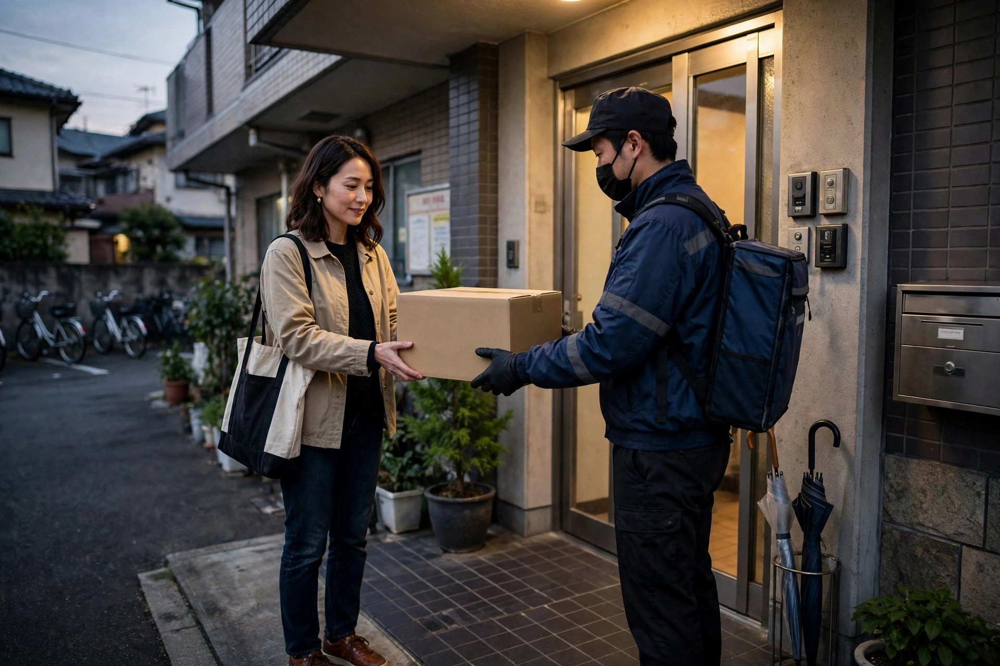
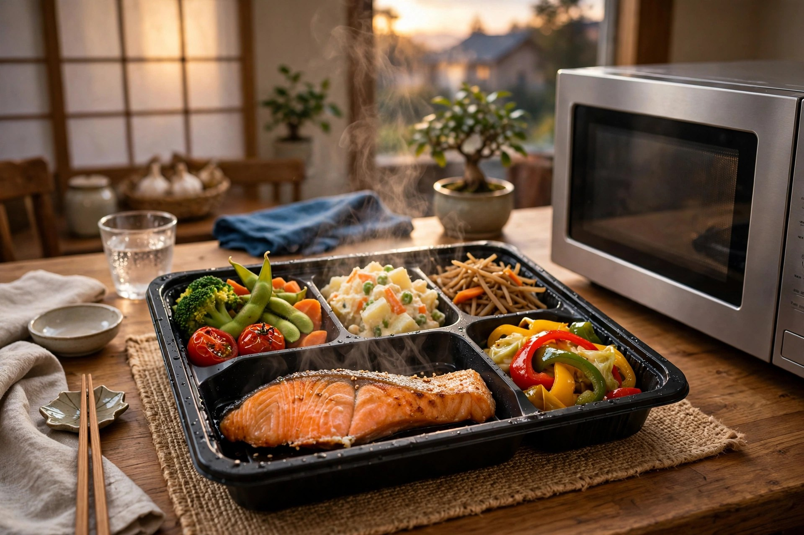

申し込む前に、止め方と届き方を先に並べる

単価と冷凍庫の容量が合っても、止める時に回数条件が残る、届く曜日が家の生活と合わない、では続きません。この記事では、スキップと解約の締め切り、回数条件、届き方と温め方を、公式の表示で並べます。公式の本文で取り切れなかった項目は「公式で未確認」と書きます。
スキップと解約の締め切り
| サービス | スキップ | 停止・解約の締め切りと方法 | 回数条件・解約時の負担 |
|---|---|---|---|
| nosh | 可。回数の制限なし | 届け予定日の4〜5日前までにマイページで手続き | 回数条件・解約金なし。解約すると継続割引のランクは失効する |
| 三ツ星ファーム | 公式で未確認 | 初回分は解約・変更ができない。2回目以降は次回出荷予定日の4日前までに、アプリ・公式LINE・電話のいずれかで手続き | 通常プランの回数条件は公式で未確認 |
| ワタミの宅食ダイレクト | 可。次回のお届けは最大70日先まで選べる | 停止は定期を3回以上届けた後から。4回目以降は届け予定日の4〜6日前までに手続き | 定期は3回以上のお届けが条件 |
| 食のそよ風 | 可。連続のスキップはできない | 締め切りの具体的な日は公式で未確認 | 6回未満で解約すると、都度送料との差額500円／回が別途かかる |
| まごころケア食 | 公式で未確認 | 停止・解約は次回到着の6日前16時までにマイページで手続き | 回数条件と解約金の明記は公式で未確認 |
| ウェルネスダイニング | 公式で未確認 | 開いた公式ページに記載がなく、公式で未確認 | 公式で未確認 |
同じ「解約できる」でも、初回分が対象外のサービス、回数を届け終えないと停止できないサービス、解約時に差額が出るサービスがあります。単価の表の回数条件とあわせて読む項目です。
届き方と温め方、賞味期限

| サービス | 届き方 | 温め方 | 賞味期限の表示 |
|---|---|---|---|
| nosh | クール便で全国へ（離島など一部を除く）。届く間隔は週1回・2週に1回・3週に1回から選ぶ | レンジで約5分。フタに温め時間が書かれている | 公式で未確認 |
| 三ツ星ファーム | 配送できない地域が一部ある。具体的な地域は公式で未確認 | レンジで約5分 | 公式で未確認 |
| ワタミの宅食ダイレクト | 佐川の冷凍宅配便で国内全域へ（冷凍食品が届けられない離島などを除く）。間隔は7日・14日・28日ごと | レンジで温める。時間はメニューごとに表示 | 公式で未確認 |
| 食のそよ風 | 冷凍で届く。配送エリアは公式で未確認 | 公式で未確認 | 公式で未確認 |
| まごころケア食 | ヤマト運輸のクール便で全国へ。間隔は毎週・隔週・3週に1回・毎月から選ぶ | レンジで温める | 公式で未確認 |
| ウェルネスダイニング | ヤマト運輸のクール便で全国へ（北海道・沖縄は追加送料）。配達の時間指定ができる。注文から1週間前後で届く | レンジ600Wで約5分 | 届いた後は冷凍保存で3か月以上と公式が案内 |
冷凍便は、受け取る時間帯と冷凍庫の空きが同じ日に重なります。届く間隔と1回の食数は、冷凍庫の計算ページの結果と並べて決める項目です。不在時の置き配の可否は配送会社と地域で変わるため、この記事では断定していません。
編集部の見方
止めやすさの差は、単価の差より生活への残り方が大きい項目です。回数条件がなく締め切りも短いサービスは、週2回から試す形と相性がよくなります。逆に、回数を届け終える条件や解約時の差額があるサービスは、単価が下がる分を「途中で止めた場合の金額」と並べてから選ぶ形が合います。金額の試算は献立を決める回数を減らす組み立て方の月額の表にあります。
出典：nosh 公式サイトと公式FAQ、三ツ星ファーム公式サイト、ワタミの宅食ダイレクト公式サイトと公式FAQ、食のそよ風公式サイト、まごころケア食公式サイト、ウェルネスダイニング公式サイト（2026年11月26日および11月28日確認）。この記事には広告を含みません。条件は変わることがあるため、申し込みの前には各公式サイトで最新の内容をご覧ください。